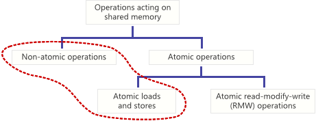
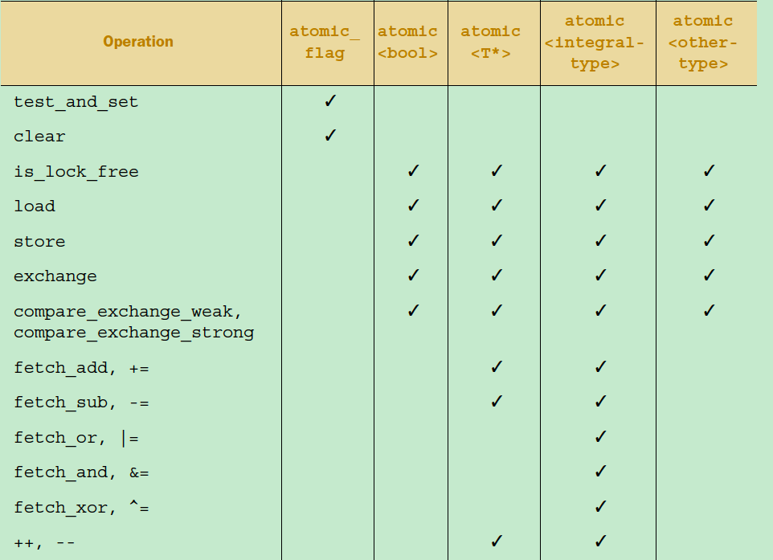
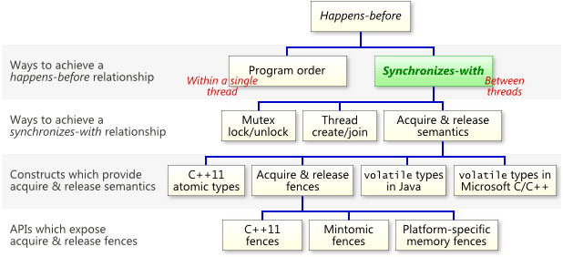
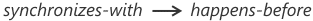
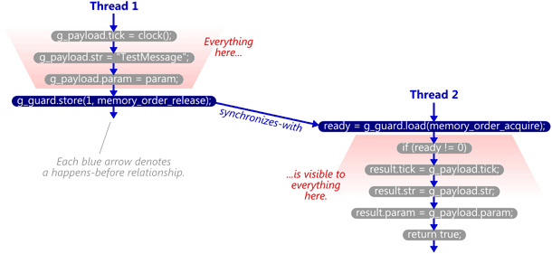

Lock-Free简介
基本概念
- Wait-freedom:
Wait-freedom means that each thread moves forward regardless of external factors like contention from other threads, other thread blocking. Each operations is executed in a bounded number of steps. It’s the strongest guarantee for synchronization algorithms.
- Lock-freedom:
Lock-freedom means that a system as a whole moves forward regardless of anything. Forward progress for each individual thread is not guaranteed (that is, individual threads can starve). It’s a weaker guarantee than wait-freedom.
- Termination-safety:
Waitfree, lockfree provide a guarantee of termination-safety. That is, a terminated thread does not prevent system-wide forward progress.
锁与Lock-Free
锁的问题
- Deadlock
- Priority Inversion
- Async-signal-safety
- Kill-tolerant availability
Lock-Free的问题
- 复杂
- 性能不一定比锁好
原子操作
原子操作
原子操作是lock-free的基础。

C++原子类型
c++的头文件提供了基础的原子类型和原子类型模板。有些类型是Lock-Free的，有些不是，和平台和数据类型有关，可以通过is_lock_free()判断是否是Lock-Free的。非Lock-Free的类型内部使用了Mutex。
std::atomic_flag类型是一个 boolean flag。保证是Lock-Free的。

实现自旋锁
#include <atomic>
class spinlock_mutex
{
std::atomic_flag flag;
public:
spinlock_mutex():
flag(ATOMIC_FLAG_INIT)
{}
void lock()
{ // test_and_set 检测flag是否被设置，如果没有设置，设置并返回旧值
while(flag.test_and_set(std::memory_order_acquire));
}
void unlock()
{
flag.clear(std::memory_order_release);
}
};
重排序
两个层级的重排序
- 编译器
- cpu运行时指令重排序
Double-Checked单例问题
Singleton* Singleton::instance() {
if (pInstance == 0) { // 1st test lock;
lock
if (pInstance == 0) { // 2nd test
alloc,
init
assign
}
}
return pInstance;
}
Step 1: Allocate memory to hold a Singleton object.
Step 2: Construct a Singleton object in the allocated memory.
Step 3: Make pInstance point to the allocated memory
compilers are sometimes allowed to swap steps 2 and 3。
一个问题
会有怎样的输出
#include <iostream>
#include <atomic>
#include <thread>
using namespace std;
atomic_int a{0};
atomic_int b{0};
void value_set() {
t = 1
a = t;
acquire
release
b = 2;
}
void observer() {
while(b != 2);
cout << a << endl;
}
int main() {
thread t1(value_set);
thread t2(observer);
t1.join();
t2.join();
return 0;
}
内存序
定义
memory order specifies how memory accesses, including regular, non-atomic memory accesses, are to be ordered around an atomic operation. Absent any constraints on a multi-core system, when multiple threads simultaneously read and write to several variables, one thread can observe the values change in an order different from the order another thread wrote them.

Happens-Before Relation
-
Let A and B represent operations performed by a multithreaded process. If A happens-before B, then the memory effects of A effectively become visible to the thread performing B before B is performed.
-
C++11, Java, Go and LLVM(编译器后端)都有的一个术语和概念。
-
单线程内，如果操作A的在操作B前，A happens-before B。
-
多线程，A Synchronizes-With B， 则A happens-before B。

-
happens-before不是指令的执行顺序，而是指操作后，内存的变化对其他操作的影响。
int a = 0; int b= 2; 如果只有一个线程执行，b可能先于a执行，但是a happens-before b.作用：明确内存访问/修改顺序，同步。
Synchronizes-With Relation
- the memory effects of source-level operations – even non-atomic operations – are guaranteed to become visible to other threads. This is a desirable guarantee when writing lock-free code
- 怎么理解：如果线程A已经执行了操作，线程B在之后需要能看到操作反应在内存上的效果。
- a thread only modifies a shared variable when there are no concurrent readers or writers. In such cases, atomic operations are unnecessary. We just need a way to safely propagate modifications from one thread to another once they’re complete. That’s where the synchronizes-with relation comes in. payload-修改的共享数据 和 guard-保护共享数据，标记是否有其他线程及是否完成。
- java的volatile关键字提供Synchronizes-With保证。
- A Write-Release Can Synchronize-With a Read-Acquire。反之不行。
struct Message
{
clock_t tick;
const char* str;
void* param;
};
Message g_payload;
std::atomic<int> g_guard(0);
void SendTestMessage(void* param)
{
// Copy to shared memory using non-atomic stores.
g_payload.tick = clock();
g_payload.str = "TestMessage";
g_payload.param = param;
// Perform an atomic write-release to indicate that the message is ready.re
g_guard.store(1, std::memory_order_release);
}
bool TryReceiveMessage(Message& result)
{
// Perform an atomic read-acquire to check whether the message is ready.
int ready = g_guard.load(std::memory_order_acquire);
if (ready != 0)
{
// Yes. Copy from shared memory using non-atomic loads.
result.tick = g_payload.tick;
result.str = g_payload.str;
result.param = g_payload.param;
return true;
}
// No.
return false;
}

Acquire and Releas
- 可以认为是轻量级的，独立的内存屏障。
- An acquire fence prevents the memory reordering of any read which precedes it in program order with any read or write which follows it in program order. 读。
- A release fence prevents the memory reordering of any read or write which precedes it in program order with any write which follows it in program order. 写。
内存屏障
- 主要有4类

void SendTestMessage(void* param)
{
// Copy to shared memory using non-atomic stores.
g_payload.tick = clock();
g_payload.str = "TestMessage";
g_payload.param = param;
// Release fence.
std::atomic_thread_fence(std::memory_order_release);
// Perform an atomic write to indicate that the message is ready.
g_guard.store(1, std::memory_order_relaxed);
}
bool TryReceiveMessage(Message& result)
{
// Perform an atomic read to check whether the message is ready.
int ready = g_guard.load(std::memory_order_relaxed);
if (ready != 0)
{
// Acquire fence.
std::atomic_thread_fence(std::memory_order_acquire);
// Yes. Copy from shared memory using non-atomic loads.
result.tick = g_payload.tick;
result.str = g_payload.str;
result.param = g_payload.param;
return true;
}
// No.
return false;
}
参考资料：
- c++ concurrency in action 2e
- https://preshing.com/
- http://www.1024cores.net/
- 深入理解C++11:C++11新特性解析与应用